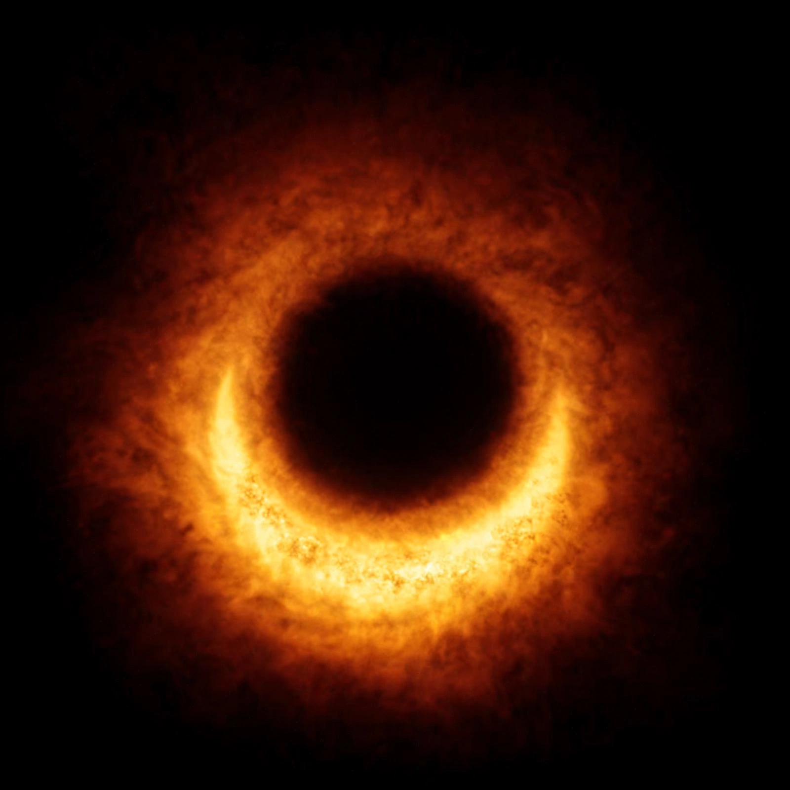

Black hole

[Image: the first direct image of a black hole's shadow (M87*, 2019) — a glowing orange ring of hot gas around a dark centre]A black hole is a region of spacetime where gravity is so strong that nothing, not even light, can escape it. The boundary of no escape is the event horizon. Black holes are predicted by general relativity: a sufficiently compact mass can deform spacetime to form one. Although the interior is invisible, a black hole's presence can be detected through its interaction with other matter and with electromagnetic radiation such as visible light.
History
The idea of a body so massive that light cannot escape was proposed in the 18th century by John Michell and Pierre-Simon Laplace. Einstein's field equations (1915) were solved within months by Karl Schwarzschild, giving the radius that now bears his name. For decades black holes were treated as mathematical curiosities; the term "black hole" was popularised by John Archibald Wheeler in the 1960s, as evidence from quasars, X-ray binaries such as Cygnus X-1, and stellar motions near galactic centres made them physical realities.
Types and formation
Stellar-mass black holes form when massive stars collapse at the end of their lives, often in supernovae. Supermassive black holes of millions to billions of solar masses sit at the centres of most large galaxies — Sagittarius A*, about four million solar masses, at the centre of the Milky Way; M87*, about 6.5 billion solar masses, in the galaxy Messier 87. Intermediate-mass black holes and hypothetical primordial black holes complete the taxonomy.
Observation
Accreting black holes are among the brightest objects in the universe: friction heats infalling gas to millions of degrees, shining in X-rays and sometimes launching relativistic jets. In 2015 LIGO detected gravitational waves from merging black holes, opening gravitational-wave astronomy. In 2019 the Event Horizon Telescope — whose results were widely shared by NASA and observatories worldwide — released the first image of a black hole's shadow, in M87; in 2022 it imaged Sagittarius A*.
Physics puzzles
Stephen Hawking showed in 1974 that black holes should emit faint thermal radiation — Hawking radiation — and slowly evaporate, raising the information paradox: does information falling in ever come out? The clash between general relativity and quantum mechanics at the singularity remains one of physics' deepest problems.